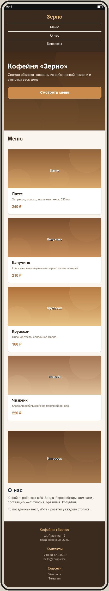

Макет мобильной версии
Файл макет-мобильный.jpg лежит в этой же папке. Сверстать нужно примерно по макету: тот же порядок блоков и общая структура, точные размеры не проверяются.

Рекомендации по мобильной версии
- Шапка. Логотип по центру, пункты меню столбиком под ним по центру. У
.header-innerпоменять направление:flex-direction: column. У ссылок.nav aубрать левый отступ и задать отступ снизу. - Первый экран. Заголовок уменьшить примерно до 28–30 px (
.hero h1), вертикальные отступы секции сократить до 70–90 px. Кнопку растянуть на всю ширину контента:display: block; text-align: center. - Меню. Карточки в один столбец: у
.cards—flex-direction: column, у.card—width: 100%. - О нас. Колонки друг под другом:
.about { flex-direction: column }, у.about-imgи.about-textзадатьwidth: 100%. Фотография сверху, текст под ней. - Подвал. Колонки столбиком по центру:
.footer-inner { flex-direction: column; text-align: center }.
Подсказка: все переопределения добавляются в конец
css/style.css внутри @media (max-width: 768px) { ... }. Десктопные правила выше не трогаем.
Проверка
- DevTools → Toggle device toolbar (Ctrl+Shift+M), ширина 375 px.
- Горизонтальной прокрутки нет.
- Порядок блоков совпадает с макетом: шапка → первый экран → меню → о нас → подвал.